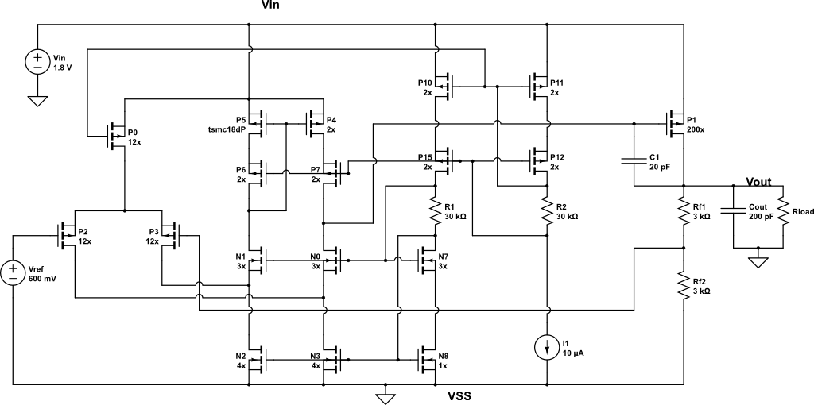
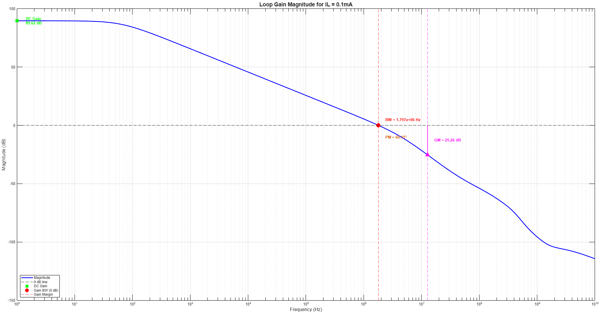
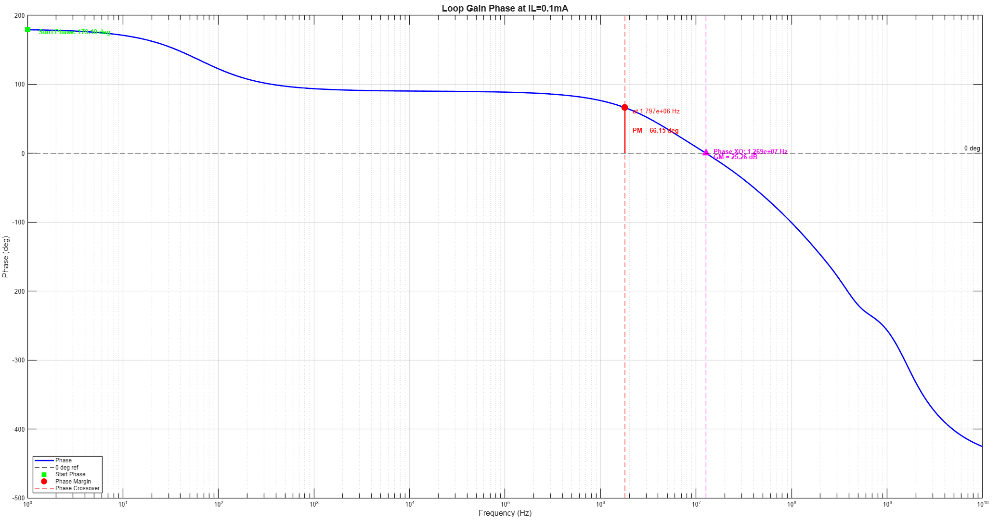
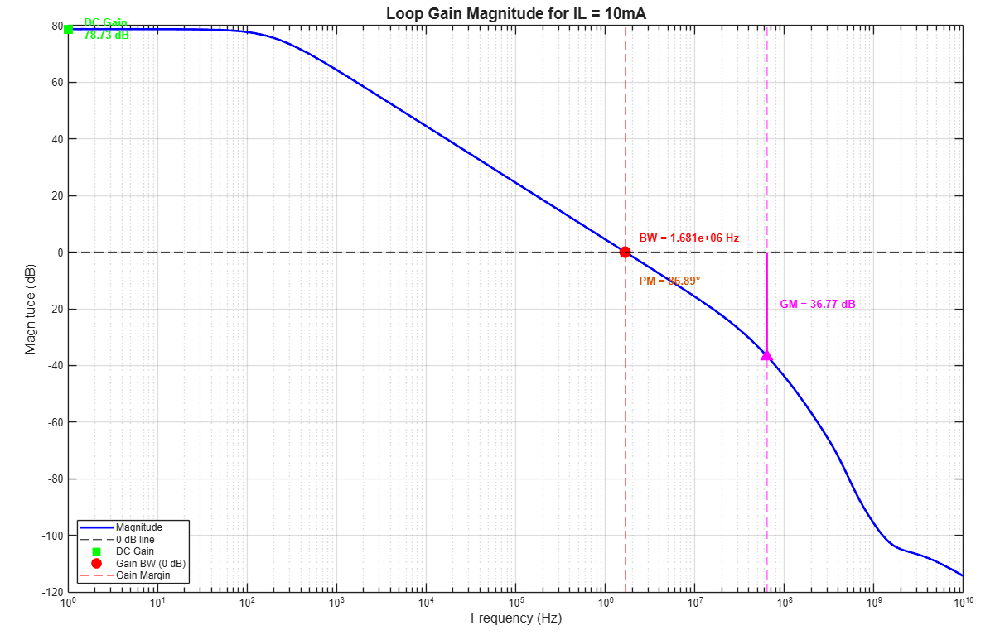
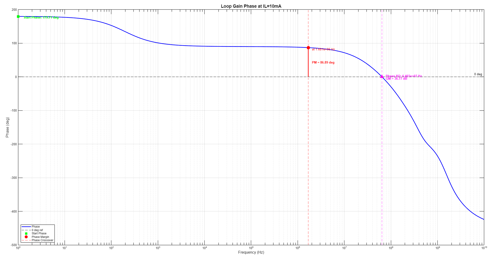
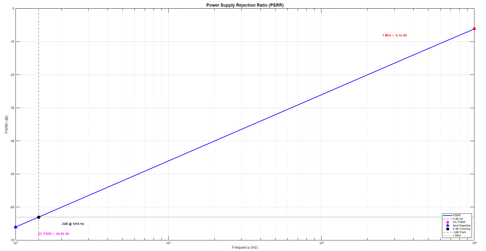
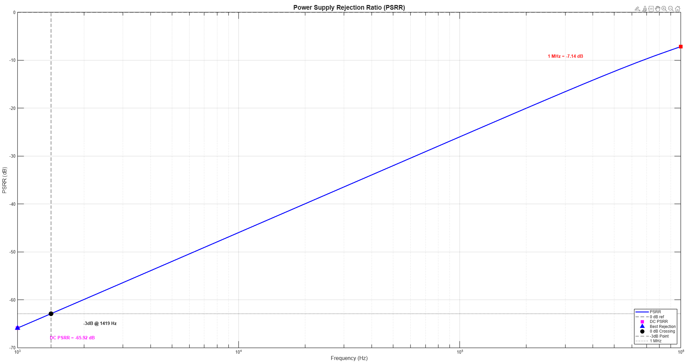
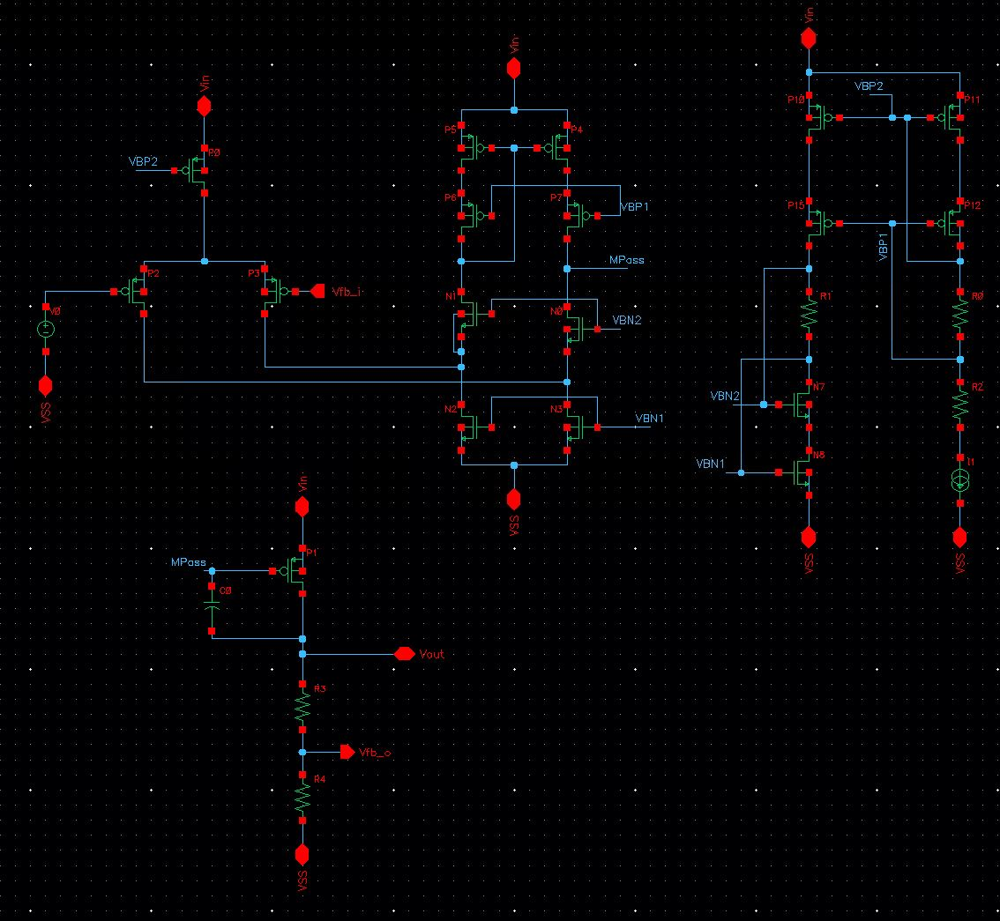
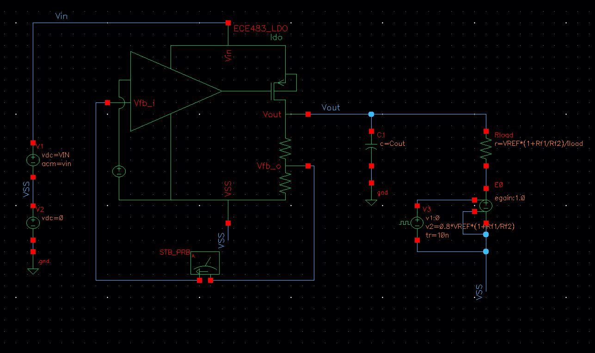

CMOS Low-Dropout Regulator
Folded-Cascode Error Amplifier | Analog IC Design | Cadence Virtuoso
Analog IC Design · Spring 2026 · University of Illinois Urbana-Champaign
Designing a stable 1.2V analog power supply
I designed and simulated a transistor-level CMOS low-dropout regulator (LDO) with a folded-cascode error amplifier, a large PMOS pass transistor, resistive feedback, and frequency compensation. The main challenge was to achieve accurate output regulation while keeping the feedback loop stable as the load current changed.
Cadence Virtuoso180nm CMOS design environmentCollaborative project with Ian ZentnerSimulation-based validation
1.8V nominal supply
Specification ≤50µV/mA
Specification ≤500µV/V
0.1–10mA load endpoints
Validation scope. These values come from transistor-level simulations reported for ECE 483. This page describes an IC design and its simulated performance; it does not represent a fabricated or physically tested LDO.
1. System Architecture and Design Requirements
A low-dropout regulator is a linear voltage regulator that maintains a target output voltage using negative feedback. Its main elements are a reference voltage, an error amplifier, a series pass device, and a feedback network. When the output changes because of the load or the supply, the amplifier adjusts the pass transistor's gate voltage to counteract that change.
For this project, we worked in a 180nm CMOS design environment and used a nominal input supply of 1.8V. The target regulated output was 1.2V, within a specified output range of 1.0–1.4V. The design had to support load currents from 0.1mA to 10mA while meeting DC load- and line-regulation limits.
| Design target | Requirement / nominal condition |
|---|---|
| Technology and tools | 180nm CMOS; Cadence Virtuoso |
| Supply voltage | 1.8V nominal |
| Regulated output | 1.2V target; 1.0–1.4V permitted range |
| Load current | 0.1–10mA |
| Maximum DC load regulation | 50µV/mA |
| Maximum DC line regulation | 500µV/V |

2. Why We Selected a Folded-Cascode Error Amplifier
Our starting point was the error amplifier, since its gain strongly influences how precisely the regulator can hold the output at its reference-derived value. Rather than starting with a simple two-transistor differential stage, we built on the folded-cascode amplifier developed in an earlier analog IC design assignment.
The folded-cascode structure offered high gain without requiring an additional output stage for the specific starting architecture. Its differential input pair senses the difference between the reference voltage and the feedback voltage, while cascode devices increase the amplifier's effective output resistance and support high voltage gain.
The tradeoff is complexity and bias current. The report specifically identifies higher quiescent-current consumption than might be possible with smaller amplifier topologies. We retained the architecture because high loop gain was a priority for regulation accuracy.
Result: The simulated DC loop gain was 89.7dB at 0.1mA and 78.75dB at 10mA. Loop gain decreases as the load changes, making multi-load stability verification essential.
On-chip biasing
The schematic also includes current mirrors and a reference bias source (10µA in the reported test schematic) to establish transistor operating points. In simulation, we inspected device quantities such as drain current, transconductance, output resistance, and overdrive voltage to verify that the amplifier and its biasing devices operated as intended.
3. Sizing the PMOS Pass Transistor
The pass transistor must deliver the required load current while leaving the error amplifier enough control over its gate voltage. We used a large PMOS device, designated P1 in the report, as the series pass element between VIN and VOUT.
A larger effective channel width increases current-driving capability and reduces the device's on-resistance. This is important for meeting the maximum 10mA load condition and limiting the voltage drop across the pass element. However, increasing the device size also increases gate capacitance, adding a substantial capacitive load to the amplifier and affecting loop dynamics.
| Pass-transistor operating parameter | Reported value |
|---|---|
| Device | PMOS P1 |
| Unit device dimensions | W = 1.44µm; L = 270nm |
| Multiplicity | 200 |
| Combined channel width (derived) | 288µm |
| Reported device drain current | 10.2mA |
| Reported transconductance | 48.42mS |
The above operating-point quantities are taken from the device table in the report; their values describe that reported simulation point, not every possible load condition.
4. Designing the Resistive Feedback Network
The feedback network compares a fraction of the output voltage with the reference voltage. In our schematic, the reference is 600mV and the two feedback resistors are each 3kΩ.
For an ideal feedback loop with sufficiently high gain, the amplifier drives the PMOS gate until the divided output approximately equals the reference:
Solving for the target output voltage:
= 0.6V × (1 + 3kΩ/3kΩ) = 1.2V
The equal-value resistors implement a nominal feedback factor of 0.5, simplifying the regulator's output target. Their absolute values also determine the current continuously drawn by the divider:
This was a meaningful design tradeoff. The resistor values give a well-defined feedback network, but their DC current contributes to the regulator's total no-load or ground-current overhead. In the final results, quiescent current was approximately 299–300µA, making the feedback network an important contributor to the current budget.
Using significantly larger resistors would reduce divider current but could also alter the circuit's small-signal operating conditions, increase sensitivity to leakage, and change the relevant impedances. Our final values reflect the specific regulation and stability choices documented in the project.
5. Stabilizing the Feedback Loop
Accurate DC regulation is not sufficient by itself: a regulator must remain stable when its load changes. Early in the design, we identified a dominant-pole placement problem. The output pole was strongly influenced by the load-dependent output resistance, so the feedback response could change significantly across the required 0.1–10mA load range.
To reduce this dependence, we added a compensation capacitor between the gate and drain of the PMOS pass transistor. The final schematic reports a 20pF compensation capacitor at this location.
This capacitor introduces Miller-related frequency compensation, moving the dominant behavior toward the internal amplifier/pass-device node rather than relying solely on the output pole. The goal was to improve stability across the full load range by shaping loop gain before it crossed unity.
Design tradeoff: Compensation improves robustness and phase margin, but it also affects achievable bandwidth and the regulator's dynamic response. We evaluated the loop response at both light and heavy loads instead of assuming one operating point represented the entire design.
Loop-gain verification




| Loop response | 0.1mA load | 10mA load |
|---|---|---|
| DC loop gain | 89.7dB | 78.75dB |
| Unity-gain frequency | 1.68MHz | 1.65MHz |
| Phase margin | 66.2° | 86.9° |
The simulated phase margins were positive and comfortably above 45° at both reported load endpoints. The light-load condition showed the lower phase margin, whereas the heavy-load condition had the lower DC loop gain. These results support the compensation choice at the tested operating points.
6. Simulation and Performance Results
We used Cadence simulations to assess the regulator's DC operating point, load regulation, line regulation, feedback-loop response, and power-supply rejection. The main performance results are summarized below.
| Metric | Simulated result | Project specification |
|---|---|---|
| Nominal VIN / VOUT | 1.8V / 1.2V | VIN ≤1.8V; VOUT 1.0–1.4V |
| Load-current range | Evaluated at 0.1mA and 10mA endpoints | 0.1–10mA |
| DC load regulation | 13.8µV/mA | ≤50µV/mA |
| DC line regulation | 55µV/V | ≤500µV/V |
| Quiescent current | 298.6µA / 300µA | Minimize |
| Phase margin | 66.2° / 86.9° | No numerical target listed |
| PSR at 1kHz | −66dB / −65dB | No numerical target listed |
| PSR at 1MHz | −6.2dB / −7.1dB | No numerical target listed |
Values separated by a slash correspond to 0.1mA and 10mA load conditions, respectively. Numerical results are those reported in the ECE 483 design report.
DC Load Regulation
Load regulation measures how much the output voltage changes as the load current changes while the input voltage is held fixed. In slope form, it can be expressed as:
The simulated value of 13.8µV/mA was below the 50µV/mA maximum specified for the project. This indicates that the feedback loop successfully corrected for load-dependent output-voltage changes in the evaluated DC sweep.

DC Line Regulation
Line regulation describes how sensitively the regulated output responds to changes in the input supply. A smaller value indicates that the feedback system is better able to suppress slow variations in VIN.
We obtained approximately 55µV/V, substantially below the project maximum of 500µV/V. This result is consistent with the high loop gain provided by the folded-cascode amplifier.

Power-Supply Rejection
Power-supply rejection measures how strongly input-supply ripple appears at the output. Unlike DC line regulation, this is a frequency-dependent result and is especially relevant for powering sensitive analog circuits.
The report expresses the output-to-input ripple transfer in decibels. Under that convention, more negative numbers indicate better rejection. The simulations showed strong suppression near 1kHz but considerably weaker rejection near 1MHz.


These plots reveal a limitation of the design: while feedback suppresses low-frequency supply disturbances effectively, its ability to reject high-frequency disturbances decreases as frequency rises. That is an important consideration when selecting an LDO for an analog or mixed-signal application.
7. Engineering Tradeoffs and Potential Improvements
High gain vs. quiescent current
The folded-cascode amplifier gave us strong DC regulation and loop gain, but the added bias circuitry increased the current consumed by the regulator itself. The measured simulation overhead of approximately 300µA is most significant when the load current is near 0.1mA.
Pass-device size vs. stability
The large PMOS passes the required load current with comparatively low on-resistance, but its gate capacitance makes loop compensation more challenging. The 20pF gate-to-drain capacitor was a deliberate stability measure.
Feedback resistance vs. current budget
The two 3kΩ feedback resistors produce the required 1.2V output with a 600mV reference, but together they consume 200µA at the nominal output voltage. Exploring higher resistor values could reduce this overhead, provided stability and bias accuracy remain acceptable.
Low-frequency vs. high-frequency PSR
Supply rejection was excellent at 1kHz relative to its 1MHz value. A future revision could investigate high-frequency supply filtering or a different compensation topology to improve rejection without sacrificing stability.
Further work could also include systematic dropout-voltage testing, time-domain load-transient sweeps, integrated output noise over a defined bandwidth, and process/voltage/temperature corner analysis. Those measurements would give a more complete picture than the particular AC and DC simulations documented in the report.
8. Design Files, Gallery, and Report
The images above were extracted directly from our ECE 483 report and are included with this page. The original portfolio also references the following Cadence screenshots, which can remain in the existing images/projects/ directory.


Course: ECE 483 Analog IC Design · Spring 2026 · Project team: John Youkhana and Ian Zentner. All experimental values shown on this page are simulation results from the submitted design report.
Conclusion
This project strengthened my understanding of transistor-level analog design and feedback-based voltage regulation. The important part was not simply reaching 1.2V at the output; it was making architectural and component-level decisions that balanced DC accuracy, current capability, quiescent consumption, and loop stability.
Starting from a folded-cascode amplifier, we selected a large PMOS pass transistor, designed the resistive divider around a 600mV reference, and introduced gate-to-drain compensation to stabilize the loop as the output load varied. Cadence simulations verified strong DC regulation and phase margin at both tested load endpoints, while the PSR response exposed clear opportunities for further improvement.